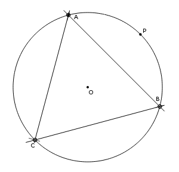

Construction of a Triangle with Compass and Straightedge

Steps:
- Draw circle with radius R centered at point O
- Center compass at any point P on the circle and create points A and B
on the circle at a distance R from P.
- Set compass radius to AB and with compass centered on either point
A or B, create point C on the circle.
- ABC is the desired triangle.